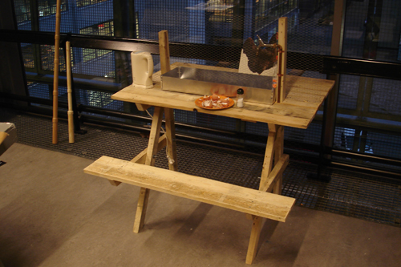

The Embassy
The assignment was to walk between two given villages outside Eindhoven and find the most direct foot-connection. Then we had to try and solve an
obstacle that would hinder us in this route. In the end we had to make a 1:1 model or, if that was too big, a 1m^3 1:1 part.
I walked between Vessem and Middelbeers and found that the pilgrims’ route to Santiago de Compostella connects these two villages. Investigating the
route, I found it winds through beautiful agricultural landscapes and the only thing that hindered me was the feeling that I could not connect to the
agriculture that determines the landscape.
So I wanted to connect the pilgrims and the farmers. The farmers are busy people so they cannot wait along the pilgrims’ route to explain what they are
doing for a living, nor can I expect them to open up their house to anyone who happens to walk by. Therefore I thought of different 'embassies' where the
farmer's work is combined with the needs of the pilgrim.
I began with three different embassies where pilgrims can experience the farms: a dairy farmers embassy where the pilgrim can sit and drink fresh milk, a
fruit plantation embassy where the pilgrim can use a compost toilet and support the nourishing of the fruit trees. In the season they can then pick fruit
from the trees. And finally a chicken farmers embassy where the pilgrim can sit and have lunch with a freshly boiled egg. I worked on the last two embassies
and made a 1:1, 1m^3 section of the chicken farmers embassy. It takes the form of a roofed-over picnic table that is merged with a chicken house. The picnic
table is the floor of the chicken house.